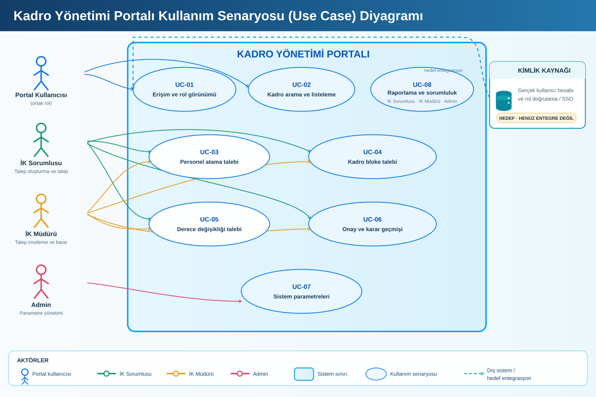
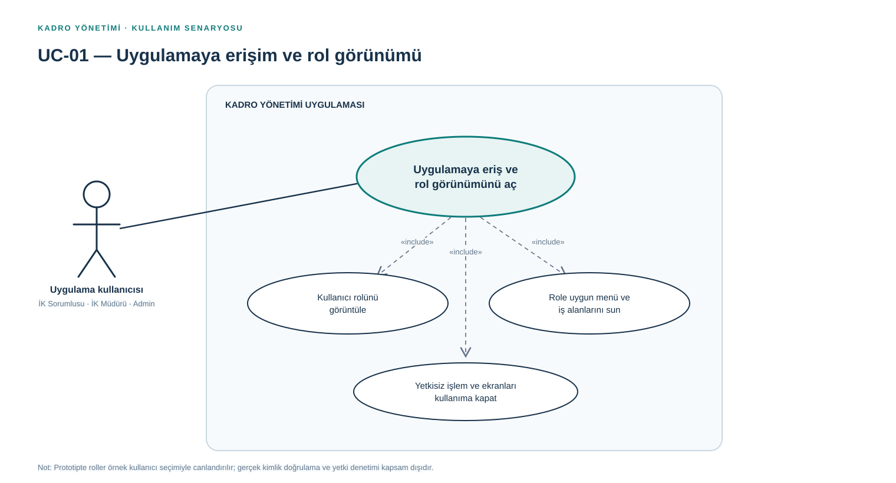
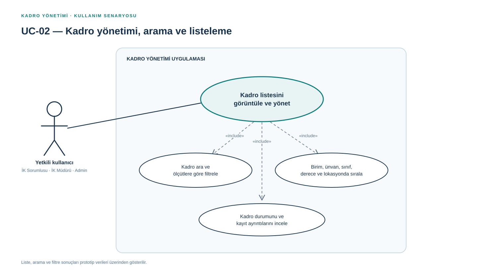
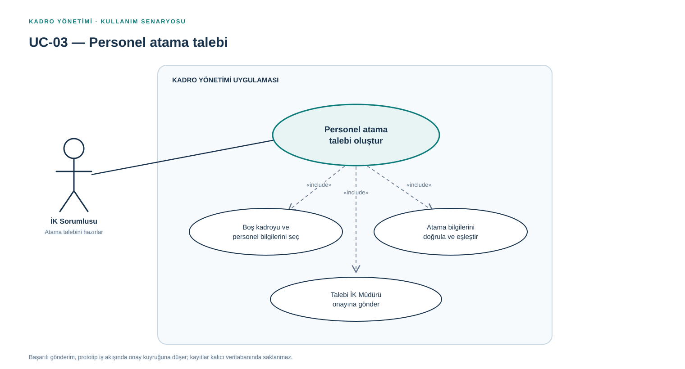
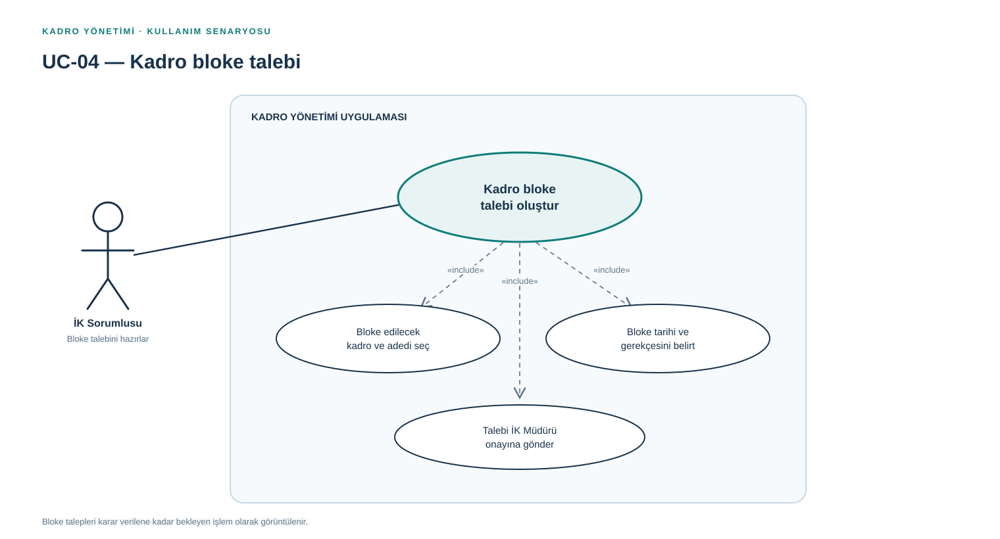
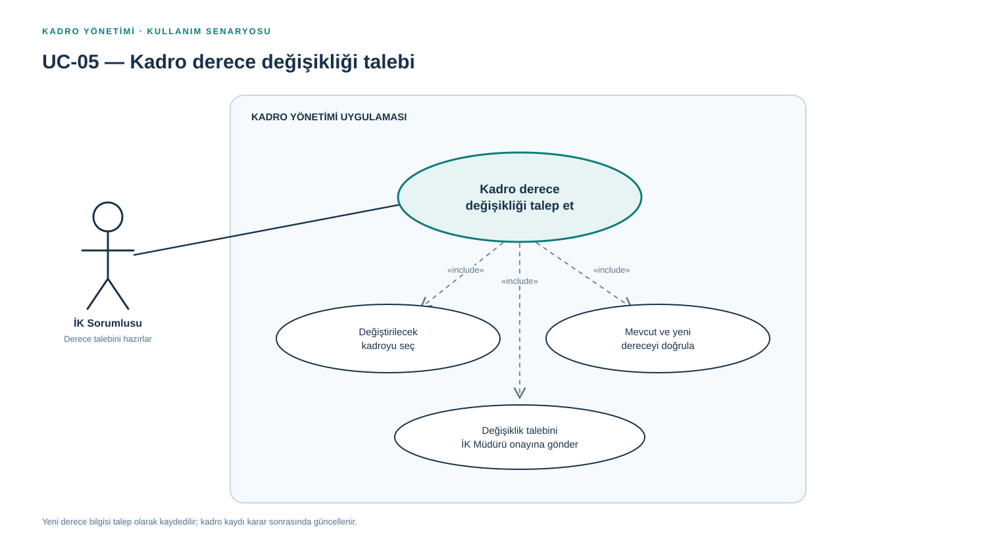
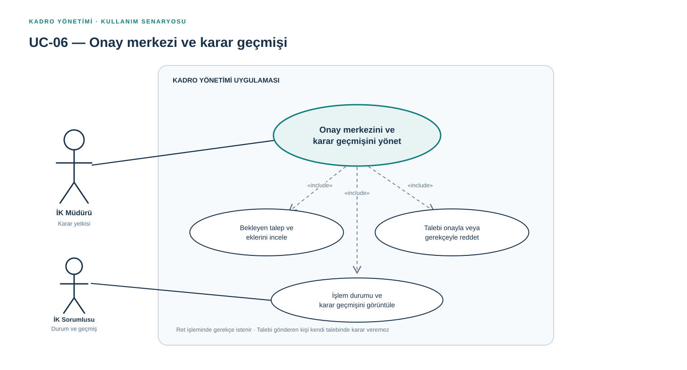
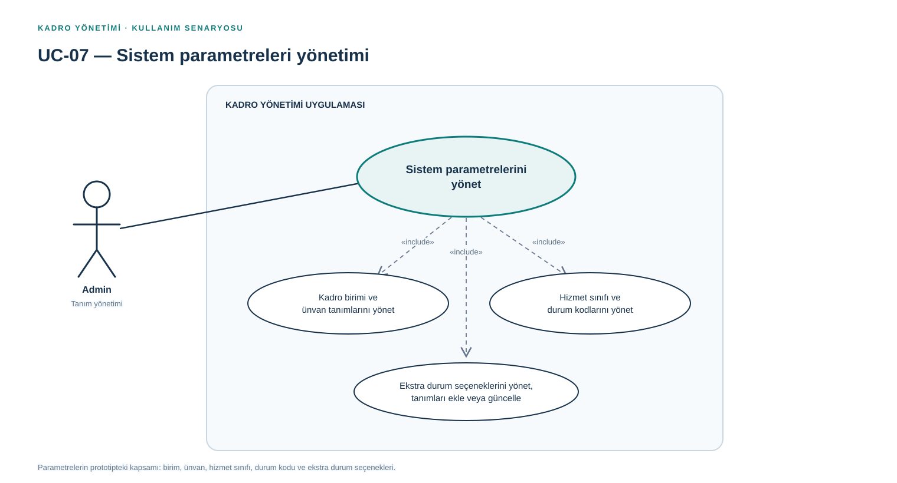
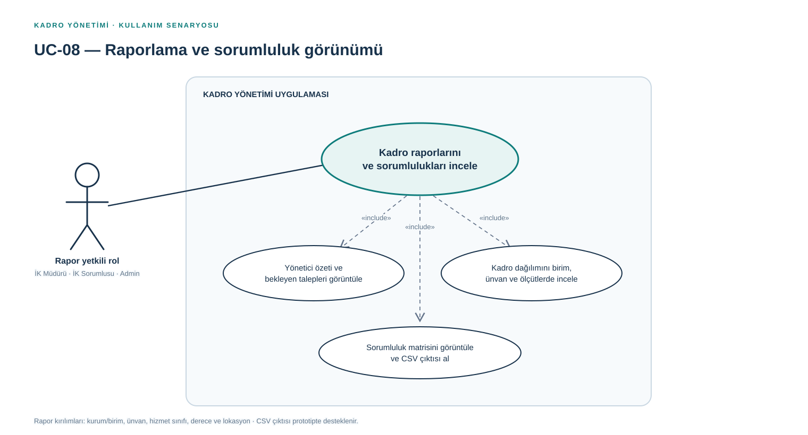

Genel kullanım senaryosu diyagramı
Portal kullanıcıları, rol ilişkileri, sistem sınırı ve UC-01–UC-08


Kadro Yönetimi · İş Analizi
İş analizi dokümanındaki UC-01–UC-08 kataloğuyla eşleşen her senaryo ayrı bir SVG dosyası olarak sunulur. Önizlemeyi görüntüleyin veya dosyayı indirin.
Sekiz ayrı senaryoyu ZIP olarak indir Genel diyagram + tüm senaryoları indirPortal kullanıcıları, rol ilişkileri, sistem sınırı ve UC-01–UC-08

İK Sorumlusu · İK Müdürü · Admin

Yetkili kullanıcı rolleri

İK Sorumlusu

İK Sorumlusu

İK Sorumlusu

İK Müdürü · İK Sorumlusu

Admin

İK Müdürü · İK Sorumlusu · Admin
